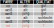

- Frequenzbasiertes Raten als einfachster Algorithmus zur Klassifizierung. Berechne Wahrscheinlichkeiten der Klassen P:
- Verbesserung mit bedingten Wahrscheinlichkeiten der Klassen:
P (gut) = 3/5
P (schlecht) = 2/5
→ klassifiziere "gut"
P (rot | gut) = 1/3
P (jung | gut) = 1/3
P (rot | schlecht) = 1/2
P (jung | schlecht) = 1/2
Welche Qualität hat der unbekannte Wein?
P (gut) ⋅ P (rot | gut) ⋅ P (jung | gut)
= 3/5 ⋅ 1/3 ⋅ 1/3 = 1/15
P (schlecht) ⋅ P (rot | schlecht) ⋅ P (jung | schlecht)
= 2/5 ⋅ 1/2 ⋅ 1/2 = 1/10
1/10 ist mehr als 1/15 → klassifiziere "schlecht"
- Definiere ein Distanzmaß zwischen den Datenpunkten (Beobachtungen).
- Lege eine Anzahl k fest.
- Um eine neue Beobachtung zu klassifizieren:
- Suche die k nächsten Datenpunkte ("k nächste Nachbarn").
- Wähle die Klasse, die die Mehrheit der nächsten Nachbarn hat (Mehrheitsvotum).
- Optional: gewichte mit der Distanz der Datenpunkte: Nachbarn die näher sind haben mehr Einfluss.
Welche Farbe hat die neue Beobachtung?
{kind=link}
- Abhängig von der Formulierung des Algorithmus (gewichtet vs. nicht gewichtet) ändert sich das Ergebnis des Algorithmus.
- Abhängig von der Wahl von k ändert sich das Ergebnis ebenfalls.
- k wird auch "Hyperparameter" genannt. Hyperparameter dienen dazu, die Funktionsweise des Algorithmus zu kontrollieren.
- Hyperparameter müssen den Charakteristika des Datensatzes angepasst werden (tuning). Im rechten Beispiel wäre k=12 sinnlos, da es nur 11 Datenpunkte gibt.
- Jeder innere Knoten ist ein Attribut.
- Jede Kante ist ein Wert (oder Wertebereich) des Quellknotens.
- Jeder Blattknoten ist ein Klassenlabel.
- Klassifizierung: Durchlaufen des Entscheidungsbaums von oben nach unten.
- Bis jetzt haben wir noch keine Daten verarbeitet, um den Algorithmus anzupassen.
- Wir trainieren den Algorithmus, indem wir die Schwellwerte (Parameter, thresholds) anhand der Trainingsdaten so lange anpassen, bis die Klassen bestmöglich separiert werden.
Welcher machine Learning Algorithmus ist der beste für Klassifizierung?
Ohne fundierte Informationen über das Modellierungsproblem gibt es kein einziges Modell, das immer besser ist als jedes andere. Aus diesem Grund ist es ratsam, eine Vielzahl von Techniken auszuprobieren und dann zu entscheiden, auf welches Modell man sich konzentrieren möchte.
[Übersetzt aus Kuhn & Johnson, Applied Predictive Modelling]
- Es gibt verschiedene Algorithmen für Überwachtes Lernen. Beispiele sind:
- Naive Bayes
- k nächste Nachbarn (k nearest neighbours)
- Entscheidungsbäume (decision trees)
- Es gibt keinen "besten" Algorithmus, aber bevor ein komplexer Algorithmus trainiert wird ist es sinnvoll, eine simple Baseline als Vergleich zu haben (z.B. Naive Bayes).
- "Lernen" bzw. Training des Algorithmus findet statt, indem die Parameter anhand der Trainingsdaten angepasst werden bis ein optimales Ergebnis erzielt wird.
- Hyperparameter (wie das k in "k nächste Nachbarn") müssen gewählt werden, so dass sie für einen gegebenen Datensatz sinnvoll sind.
Am 3.10. von 17:00 bis 18:45 im HS 15.05.
- Neuronale Netze als mächtige Architektur für Algorithmen des maschinellen Lernens.
- Indikatoren für die Performance von Klassifikationsalgorithmen.
- Training von Algorithmen: underfitting, overfitting, Bias und Varianz.
- Trainingsdaten: Datentypen, Datenprobleme.
- Erweiterung des überwachten Lernens auf Regression.